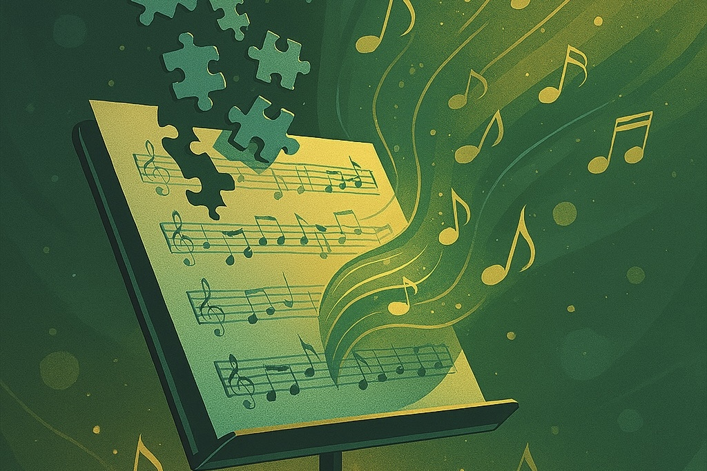

4 minute read · Written December 31, 2023 · Published June 29, 2025
Originally written as a personal statement for college applications

Jigsaw puzzles were my first passion. Column by column, row by row, diagonally–baby-toothed me spent hours on the wooden floors of our home lost in a flow state of puzzling. I witnessed each piece fall into place accordingly, and that orderliness soothed me.
While my systematic approach to things worked for hundred-piece jigsaw puzzles, navigating the social mysteries of grade school proved to be a puzzle far more perplexing to me. I discovered that people were messy: multi-faceted and unpredictable. I couldn’t simply reference a picture from a box to understand them. I enviously wished my words flowed in conversation as effortlessly as tracing column by column through a jigsaw, and I yearned to connect with others as seamlessly as two pieces of a puzzle.
After having the gradual yet crushing realization that I probably wouldn’t be the “it girl” in my elementary school class, at nine I was relieved to discover something that clicked for me–the clarinet. The satisfaction of clicking the keys beneath my fingers and feeling vibrations resonate throughout my body was akin to the tactile pleasure of solving jigsaw puzzles, yet instead of connecting cardboard pieces to create an image, I assembled notes on a page to make a melody. I liked that I could apply my methodical mindset to learning music, practicing passages over and over until they sounded just right.
Squeaks and squawks, chipped reeds, tarnished nickel, and worn corks, filled the days as I threw myself into the clarinet. Repairmen were appalled by the clackiness of my keys, as I played so much that I loosened the mechanisms. Yet, at the time, my understanding of music was still one-dimensional, my goal simply to learn my music and play it properly.
In seventh grade, the adjudicator of my district’s solo festival changed my perception of music. After I performed, he said to me, “technique is technique, and that will come, but your musicianship is what reflects what’s inside, and that is at a high level.” I earned a perfect score in that festival, but, contrary to what my meticulous brain thought, it wasn’t merely through polished runs or agile articulation, it was through artistry. I didn’t just perform for someone–I moved someone.
As a musician, I realize that music’s beauty is reflected not solely by my skill but by my heart. Last summer over a hundred students and I came together from seven different countries to make up Boston University Tanglewood Institute’s Young Artist Orchestra. For our last concert cycle, we had two weeks to prepare what is deemed as Mahler’s darkest symphony: Mahler 6, ‘Tragic,’ 80 minutes, 328 pages, of late-Romantic music. It was a feat that would’ve otherwise seemed overambitious if it wasn’t for the trust we had built between one another over six weeks, playing chamber music, encouraging each other in masterclasses, attending concerts, spending late nights playing cards, or looking up at the stars. What moved me most about the entire experience wasn’t flawless intonation or perfectly synched notes, it was that on concert day, despite imperfections, together we experienced Mahler’s pain, laughed in his scherzo, rejoiced in his victories, and endured his failures, surrendering all of our endless hours of practice to the music, creating a piece of art never to be recreated exactly the same way again. We became one collective body working together to create something beautiful.
I have learned that the beauty of music, much like life itself, doesn’t stem from perfection. So, while there is a sense of satisfaction in reorganizing perfectly laser-cut pieces, I release my desire to approach the world as a jigsaw puzzle, embracing each moment with the understanding that the awkward paves the way for the effortless, the rocky for the serene, and the daunting for the exciting. Indeed, Gustav Mahler once told Jean Sibelius that “a symphony must be like the world. It must embrace everything.”
Website created by Hannah Webb | Visuals generated with DALL·E, powered by OpenAI